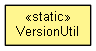

org.eclipse.emf.cdo.releng.version
Class VersionUtil
java.lang.Object
 org.eclipse.emf.cdo.releng.version.VersionUtil
org.eclipse.emf.cdo.releng.version.VersionUtil
- public class VersionUtil
- extends Object

|
Method Summary |
static void |
close(Closeable closeable)
|
static IFile |
getFile(IPath releasePath,
String extension)
|
static byte[] |
getSHA1(IFile file)
|
static org.osgi.framework.Version |
normalize(org.osgi.framework.Version version)
|
static void |
someDeprecatedCode()
Deprecated. This method exists so that others can produce a reliable compiler warning by calling it. A
@SuppressWarnings("deprecation") annotation will never become unnecessary then. |
| Methods inherited from class java.lang.Object |
clone, equals, finalize, getClass, hashCode, notify, notifyAll, toString, wait, wait, wait |
VersionUtil
public VersionUtil()
close
public static void close(Closeable closeable)
getFile
public static IFile getFile(IPath releasePath,
String extension)
normalize
public static org.osgi.framework.Version normalize(org.osgi.framework.Version version)
getSHA1
public static byte[] getSHA1(IFile file)
throws NoSuchAlgorithmException,
CoreException,
IOException
- Throws:
NoSuchAlgorithmException
CoreException
IOException
someDeprecatedCode
@Deprecated
public static void someDeprecatedCode()
- Deprecated. This method exists so that others can produce a reliable compiler warning by calling it. A
@SuppressWarnings("deprecation") annotation will never become unnecessary then.
Copyright (c) 2004 - 2012 Eike Stepper (Berlin, Germany) and others.